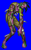
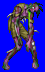
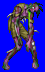
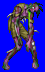

Height: 2 meters Weight: 175 lbs.
Habitat: Graveyard, farm Origin: Africa
Meaning: "Zumbi", meaning "snake spirit" in an African tribal language
A corpse returned to the world of the living via necromancy. It is said that the rite that catalyzes the revival is accomplished using the spirit of a snake. Zombies are slaves to their overseer, and neither rot nor attack him. It is typically weak and slow to react, using whatever nearby objects it can find as weapons. In today's games, the fetid touch of the zombie usually causes a host of maladies.
See also: Ghoul, Wight, Skeleton, Necromancer